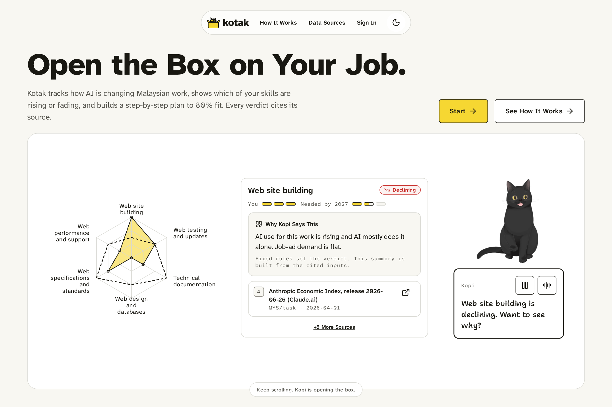
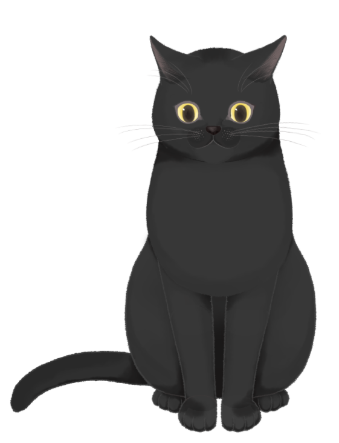
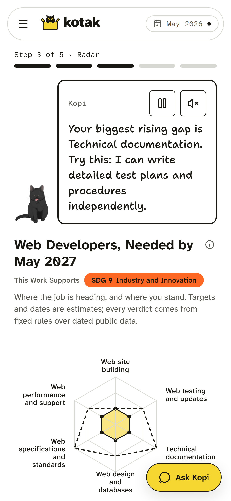
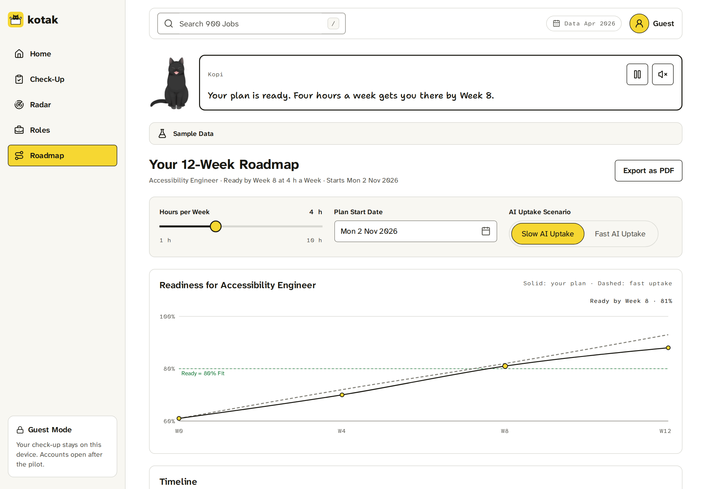
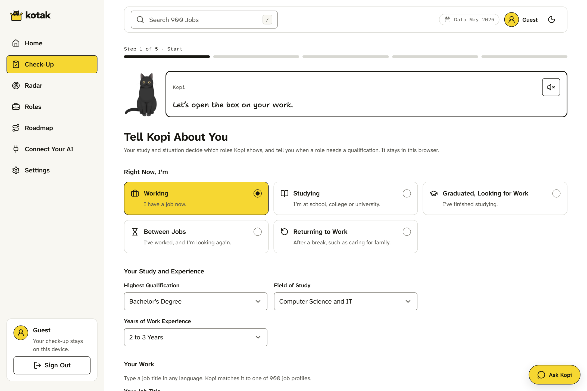
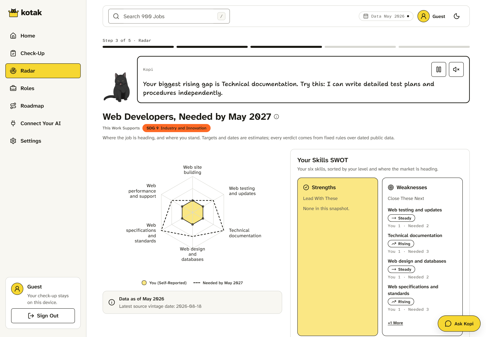
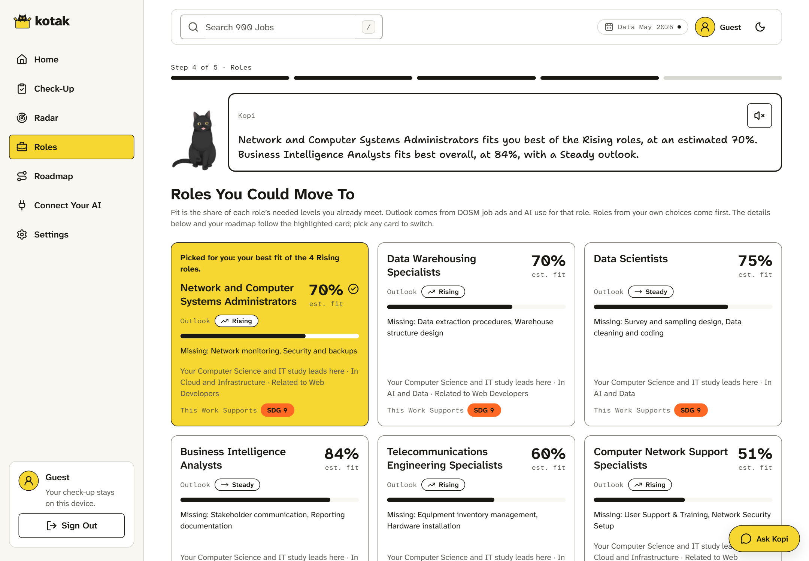
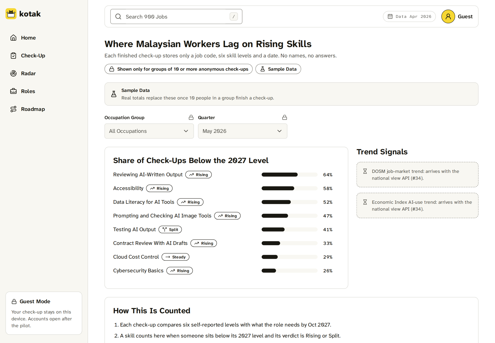
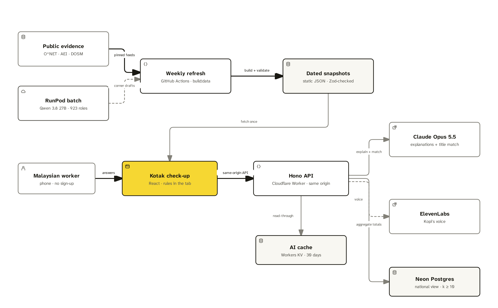

Team T010NG
Team T010NG
Team Information
kotak.
Software and digital workers in Malaysia: see what AI changes in your job, and what to learn next.

Sample data · phone and desktop · every verdict cites its source
Hee Zi Jie
@AlaskanTuna
Product lead
Yu Kang
@kymil4
L Hao
@chaosiris
Jin Siang
@DrxgClanPC
Jun Song
@Doraemon-00
The Problem
1. The Problem
The job is changing.
The training isn't.
For developers, testers and designers, AI tools are arriving before a clear training plan.
Use vs training
56%of Malaysian professionals use AI at work
Hays Asia Salary Guide 2025 · via Domain 1 brief
Scale
620,000workers projected to be significantly affected
TalentCorp Impact Study 2026
Exposure
28%of Malaysia's workforce is highly exposed to AI
World Bank & ISIS Malaysia · Sep 2025
When a company rolls out AI coding tools, which skill should its manager fund first? A course list does not answer that.
Kotak problem statement

The User
2. The User
AI tools arrive.
What should we learn?
Sample persona: Aina, a front-end developer in Kuala Lumpur.
Sample persona · invented for this pitch. Not a real user or a user-test result.
The same engine covers 923 jobs. We start here.
data/generated/role-corners.json · issue #279

The Solution
3. The Solution
Leave with a plan.
Start this week.
A dated plan, weekly hours, a finish date, step costs and an employer funding route.
A Dated Plan You Can Follow
Sample: 2 Nov 2026–24 Jan 2027 · 12 weeks. Code review: 3 h/week. Accessibility and practice: 4 h/week.
Free Steps First
GitHub Skills · Free. W3C WAI · Free. MDN ARIA · Free. freeCodeCamp QA · Free; fast uptake adds 2 h/week.
Other roles: “Search suggestion, not checked”.
Employer Funding Route
A levy-paying employer applies before training, then claims approved costs. Check the scheme before booking.
Sample plan: apps/web/src/demo/data.ts · dates from start + 12 weeks. Funding: HRD Corp FAQ · 23 Oct 2026.

How It Works
4. How It Works
Data decides.
AI explains.
Every verdict, target, fit score and roadmap order comes from fixed rules over dated snapshots.
01 · Source
Dated snapshotsAnthropic Economic Index Apr/May 2026 · O*NET 30.1 · DOSM · MyCOL
02 · Rule
Fixed rulesLevels, targets, verdicts, fit scores and order
03 · Output
Your planRadar · three roles · 12-week roadmap
Draft
RunPod groups each job's tasks into six skills and drafts the questions.
Explain
Claude writes two sentences from the cited rows only.
Speak
Kopi reads its lines aloud; text and mute always available.
The browser recomputes every verdict when the snapshot changes. No model call in the loop.
The rule
AI never sets a verdict.
- It explains the verdict, quoting dated rows.
- A check rejects any explanation that changes it.
- If Claude fails, a fixed template answers.
Live Demo
5. Live Demo
Same job. New month.
The plan moves.
Load the May 2026 snapshot. The browser recomputes the radar, roles and roadmap.
Roadmap: “Write Tests for AI-Written Code” joins weeks 9–12.
Same profile. Same 12 answers. Only the snapshot changes.
 The Prototype
The Prototype
6. The Prototype
The whole loop, on screen.




13 viewsphone + desktop
Same content at 390 px and 1440 px.
WCAG 2.2 AA. Reduced motion. Guest session on this device.
Every screen carries the Sample Data label.
Innovation
7. Innovation
Courses are the supply.
Kotak sets the priority.
They offer courses. Kotak tells you which skill to learn first and why now, then points you to them.
What already exists
Maps roles and skills for Malaysia.
Career Explorer compares skills across roles.
Subscription video courses taught by well-known experts.
Malaysian subscription platform for live online classes. Says it is an HRD Corp-registered training provider.
HRD Corp's learning portal: free and premium courses.
Sources: MyMahir · LinkedIn Career Explorer · masterclass.com · elatih.hrdcorp.gov.my. ReSkills: NST, 2021 · reskills.com.
What Kotak adds
Swap Apr → May; verdicts and ranking recompute in the browser.
Every score has a visible formula, not a model's judgement.
A free step, a time estimate and a finish date, not just a gap list.
Anonymous skills totals for agencies; small groups stay hidden.
Our claim is the mechanism, not the model.
Impact · SDG 4.4
8. Impact · SDG 4.4
A plan you can audit.
A baseline you can move.
“By 2030, substantially increase the number of youth and adults who have relevant skills, including technical and vocational skills, for employment, decent jobs and entrepreneurship.”
UN SDG API · official target text · accessed 22 Oct 2026
The baseline · Malaysia, 2024
aged 15+ with above-basic digital skills in all 5 areas
reported writing a computer program
DOSM · UN SDG API indicator 4.4.1
Core KPI
Sourced-roadmap rate
- Finished check-ups that reach a roadmap in under 3 minutes.
- Every verdict, fit score and milestone shows its source and date.
- Target: 100% · 0 uncited recommendations.
PRD §4 · issue #28
Phase 2 test
seeded test profiles
reach a sourced roadmap in under 3 minutes
- 0 uncited recommendations.
- 100% of hand-checked demo roles flip at least one verdict on Apr → May.
PRD §4 · issues #28, #37
What we do not claim
No lives-saved claim. No job-placement claim.
We measure the evidence chain: a dated plan a worker can trust enough to start.
Who Pays
9. Who Pays
Workers use it free.
Employers pay.
The employer pays Kotak for a team view. The levy it already pays funds approved training.
One User · One Payer
A personal check-up and a dated learning plan.
Pay for a team view of skill gaps and where to spend their training levy. Not built yet.
TalentCorp and HRD Corp get the anonymous national view. Totals only for groups of 10 or more.
National-view rule: apps/api/src/routes/national-view.ts · issue #279. Team view: next step.
Use the Levy Already Paid
Registered employers pay a monthly levy of 1% of wages plus fixed allowances; 0.5% in the optional category. Apply before training and claim approved costs from it.
HRD Corp FAQ · accessed 23 Oct 2026
An employer's own HR assistant can call the same rules through MCP.
A route to explore for Kotak.
Kotak's team view and training funding are separate.
Technical Approach
10. Technical Approach
Rules in the browser. Evidence with a date.
Cached answer or fixed template. The verdict never changes.
Sources: apps/api/src/ai/claude.ts · TECH-DECLARATION.md · TRD.md · role-corners.json.
